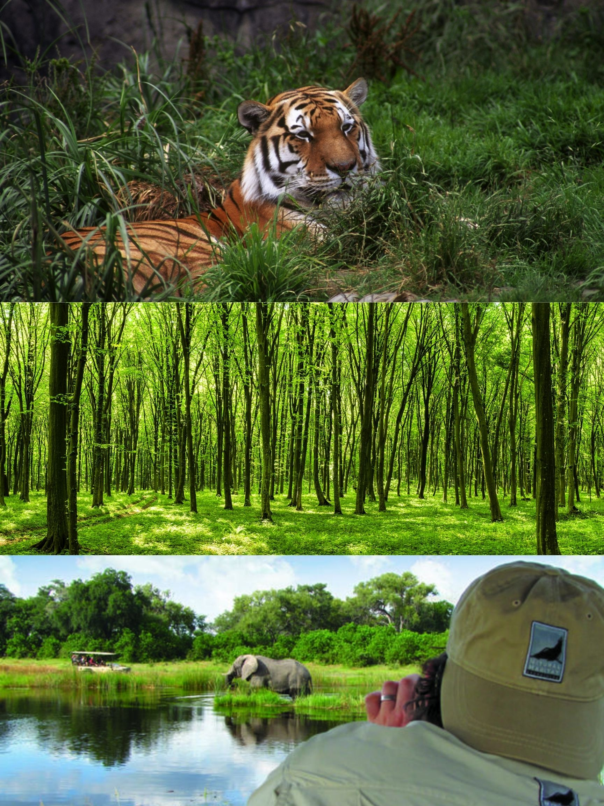

A protected area according to the IUCN is a clearly defined geographical space, recognized, dedicated and managed, through legal or other effective means
means to achieve long term conservation of nature with associated ecosystems and cultural values. They are areas which provide us
with clean food, water, medication, air and protection from natural disasters.However the main thing protected area provide us with is a solution against
climate change. By conserving protected area we are conserving the amount of green space and clean water left. Lands and oceans act as carbon sinks, absorbing emissions and would heat out planet.
To know more about Protect Areas and climate change visit :
- What are Protected Area
- Why are Protected Areas Important
- What is climate change
- Protected area and Climate Change
- Affects of Climate change on Protected Area
- Climate change and Solution

Reasons Why we have protected Areas
-
To provide a safe place for Wild plants and animals:Protected places help prevent the extinction of animals due to habit loss by preserving
and maintaing the Animals natural habit. It is stated about 80% of animals are at risk of going extinct in Ontario and around the world.
-
To Strenghten our resillence to Climate change:Protected places help lower the affect of extreme weather, enhance carbon storage, and provide a
place for plants and animals to adapt to a changing climate
-
To maintain functioning ecosystem and the benefits they provide : Protected area provide clean air, water,healthy soil,wild food and medicine as they
are taken care of.
-
To bulid Knowledge and understanding of natural systems and the impacts of human activity
Serve as enviromental benchmarks for monitoring the health of natural systems and understadning the impact of climate change[pollution,resource extraction,invasive species]